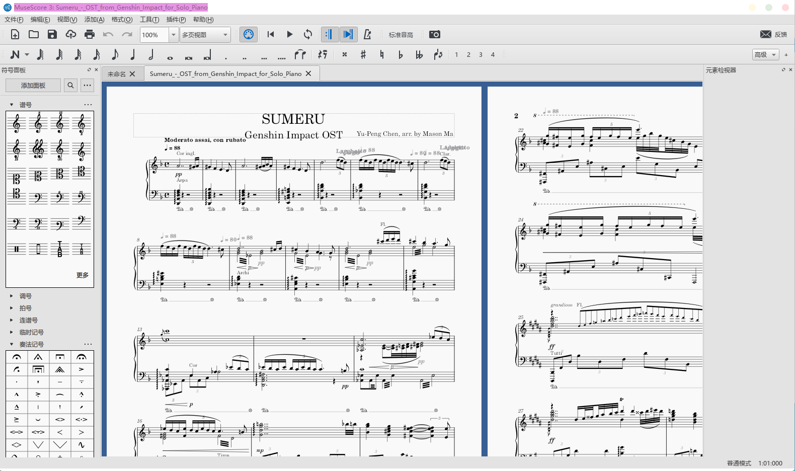
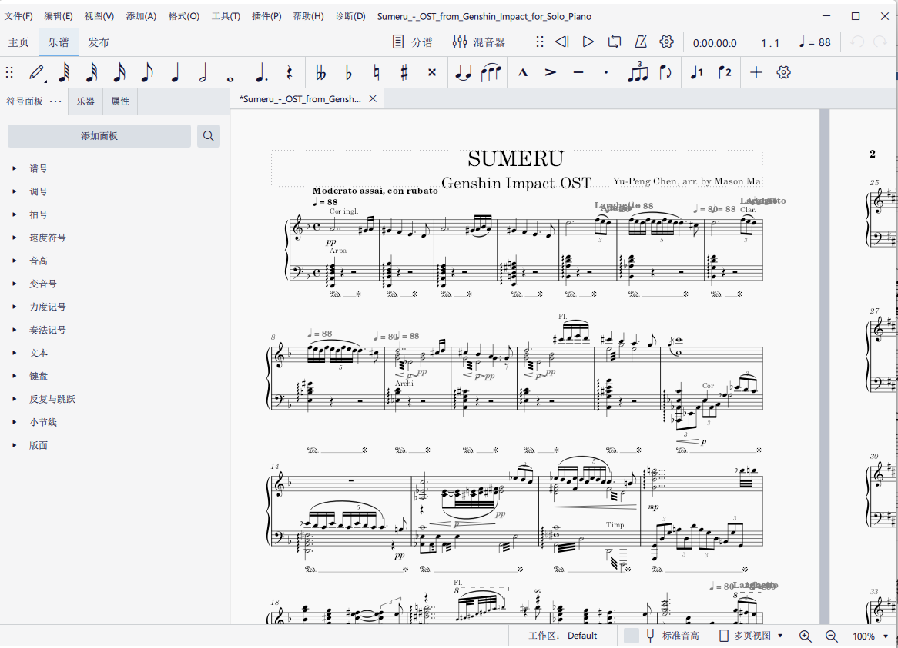
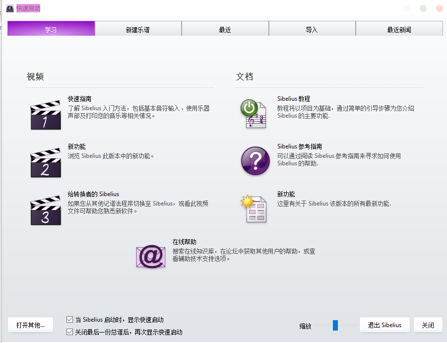
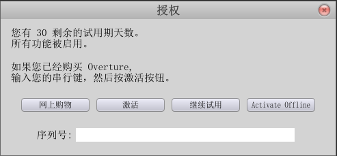
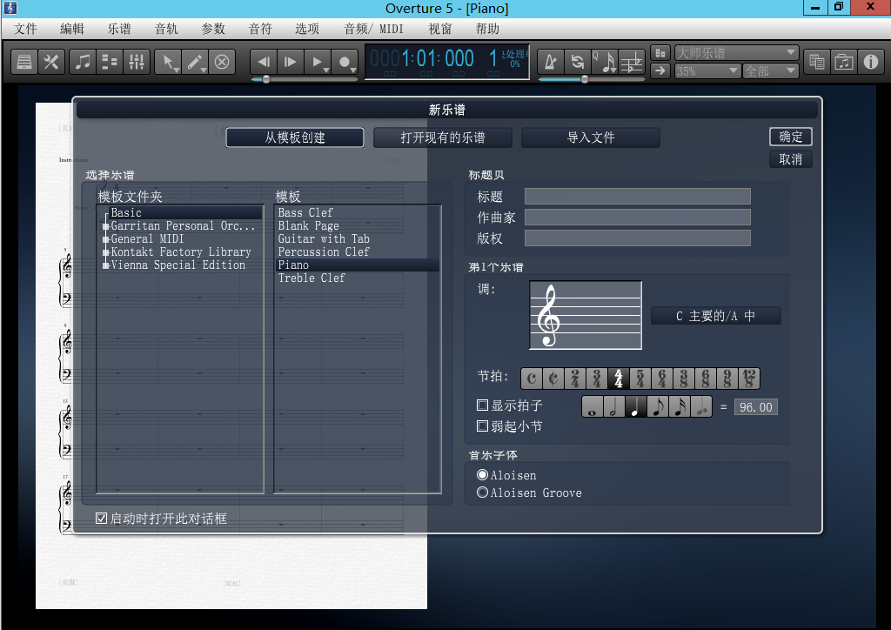

Do you know why we provide MuseScore Files only?
Do you want to know?
In this blog, we'd like to provide the reason why we use MuseScore rather than Sibelius or Overture.
First, we must give an introduce of these 3 softwares.
MuseScore is a free and open-source sheet music composing software. Its features of Easy-Using and Auto layout receive people's like.
It is because it is free and open source software that requires no additional spending that we use it as our primary sheet music composing software.
Its latest version is 4.0.1, but its most stable version is 3.6.2.
MuseScore.org (Official Site)
MuseScore in GitHub
MuseScore.com (Sharing Sheet Music)

ScreenShot of MuseScore 3

Screenshot of MuseScore 4
From score-safe review modes and inspiring loop playback, to better performance and time-saving workflows, Sibelius enables you to create beautiful scores quickly and easily with advanced notation and music arrangement software.(From its official site)
Emm...But you are SO EXPENSIVE! We have to pay $9999 to purchase for a permanent license of Ultimate version.
Obviously we cannot afford this price, but someone has a pirate version of Sibelius 2019. so we just use it for test, and then delete it.
Its latest version is 2023.2, but we can only use Sibelius 2019.1 instead. (But the latest version has same features and no new functions than the older version, and made no changes except the version number.)
Avid Sibelius

ScreenShot of Sibelius 2019
As its Chinese Specific Official Wibsite goes: "Overture 5 is a standard worldwide software for editing, creating, and printing music, with a built-in sound library, an official Chinese version, good compatibility, support for both Windows and macOS platforms, support for midi effects and the ability to export midi. Overture 5.5 is a professional pentatonic sheet music editor, production and printing software, its powerful, easy to start, simple and clear user interface ensures high efficiency and ease of use, you can easily generate pentatonic sheet music directly on the score through keys, menus and dialog boxes."
Emm...That's amazing...And it's Unbelievable, right?
But it's false. The introduction of the "Official Website" obviously exaggerates the advantages of the product itself.
It cost $249, and we still cannot afford it. So we started 30 days trial in our Virtual Machine. When the trial period expires, we can reset the trial period by restoring the virtual machine to its previous state and reinstalling the software. (It's clever, but it's a way to pirate this software)
And a joke that it has the official Chinese version:

您有 30 剩余的试用期天数；所有功能被启用；如果您已经购买 Overture，输入您的串行键，然后按激活按钮。网上购物。激活。继续试用。Activate Offline。序列号：_
Translate in English: "You have 30 trial days remaining; all features are enabled; if you have already purchased Overture, enter your serial key and press the Activate button. Shop online. Activate. Continue the trial. activate Offline. serial number: _"
Maybe in English it is not strange, but in Chinese, I just want to say that "What the f**k are you saying?!""

ScreenShot of Overture 5